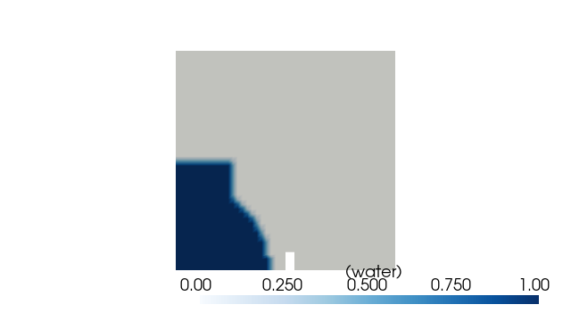

Note
Go to the end to download the full example code.
Set initial conditions with pyoftools setFields¶
Before a solver can do anything useful, the case needs initial fields. pyOFTools
ships a small CLI — pyoftools setFields — that runs a Python (or JSON) spec
to populate 0/ fields, using the same Box / Sphere / & / |
/ ~ selectors you’ll use later for post-processing. That symmetry is the
point: one geometric language for both ends of the run.
In this tutorial you’ll:
clone the
damBreakbaseline case,read its bundled
system/setFields.pyto see what an in-Python setFields script looks like,run it via the CLI and verify
0/alpha.wateris no longer uniform,render the resulting field with pyvista.
The next tutorial picks up from a case prepared this way and instruments the solver run.
Imports¶
patch_pybfoam disables OpenFOAM’s SIGFPE trap so numpy/pyvista don’t
crash on later use. We import numpy up front, before the first OpenFOAM
call, so its denormal-probe import never sees the trap re-enabled.
import subprocess
import numpy as np # noqa: F401 — imported early to dodge SIGFPE
import pyvista as pv
import pyOFTools.patch_pybfoam # noqa: F401
from pyOFTools import clone_example
Clone the case¶
pyOFTools.clone_example() copies examples/damBreak to a tmp dir and
restores 0.orig/ → 0/. The on-disk baseline is never touched.
CASE = clone_example("damBreak")
print(f"working case: {CASE}")
working case: /tmp/pyoftools_8fr105ff/damBreak
Build the mesh¶
setFields writes into 0/ based on cell positions, so the mesh has to
exist first. The damBreak case ships with system/blockMeshDict;
pybFoam.meshing.generate_blockmesh() reads it and writes the resulting
polyMesh into constant/ — same effect as running the blockMesh
binary, just in-process.
from pybFoam import Time, argList, dictionary
from pybFoam.meshing import generate_blockmesh
time = Time(argList([str(CASE), "-case", str(CASE)]))
generate_blockmesh(time, dictionary.read(str(CASE / "system" / "blockMeshDict")))
<pybFoam.pybFoam_core.fvMesh object at 0x7f5a03378bd0>
What the setFields script looks like¶
The bundled script populates alpha.water to 1 inside a box (the
initial water column) or inside a sphere — the very same Box /
Sphere you’ll see again in More monitors in the same post-processor. The
script ends with write(alpha) so the modified field hits disk.
"""Initial conditions for the damBreak case, in Python.
Invoked by ``pyoftools setFields system/setFields.py``. Sets ``alpha.water``
to 1 inside a rectangular box (the water column) **and** inside a sphere at
the origin (a small inclusion that highlights how Box/Sphere compose).
Anything you can express with ``Box``, ``Sphere``, ``&``, ``|``, ``~`` from
:mod:`pyOFTools.spatial_selectors` you can use here — the same selector API
that drives in-situ post-processing later in the run.
"""
import numpy as np
import pybFoam
from pybFoam import volScalarField, write
from pyOFTools.datasets import InternalDataSet
from pyOFTools.geometry import FvMeshInternalAdapter
from pyOFTools.spatial_selectors import Box, Sphere
def set_field(mesh):
# ``read_field`` loads ``0/alpha.water`` from disk and registers it.
alpha = volScalarField.read_field(mesh, "alpha.water")
# ``np.asarray`` returns a zero-copy view of the OpenFOAM internalField;
# in-place writes here mutate the underlying field that ``write(alpha)``
# will persist below.
np_alpha = np.asarray(alpha["internalField"])
np_alpha[:] = 0.0 # start from a clean baseline
# ``InternalDataSet`` wraps the field + mesh adapter into the dataset
# shape selectors expect. ``mask`` (written by the selector below) and
# ``groups`` (written by binners) live on this object.
int_alpha = InternalDataSet(
name="alpha.water",
field=alpha["internalField"],
geometry=FvMeshInternalAdapter(mesh),
)
# The water column (a box covering the lower-left corner) OR a sphere
# centred at the origin. ``box | sphere`` builds a union selector; the
# final mask is True wherever the cell centre is inside either region.
box = Box(min=(0, 0, -1), max=(0.1461, 0.292, 1))
sphere = Sphere(center=(0.0, 0.0, 0.0), radius=0.25)
combined = box | sphere
# ``compute`` evaluates the selector and writes ``int_alpha.mask`` —
# one boolean per cell. No values are touched on the field itself.
int_alpha = combined.compute(int_alpha)
mask = np.asarray(int_alpha.mask)
# Apply the mask: cells inside the region get α = 1, the rest stay 0.
np_alpha[mask] = 1.0
# Flush the mutated field back to ``0/alpha.water``.
write(alpha)
# Standard OpenFOAM case-open boilerplate. ``argList(["."])`` treats the
# current directory as the case root; ``Time`` and ``fvMesh`` give us the
# clock and the polyMesh that ``blockMesh`` has already written.
argList = pybFoam.argList(["."])
runTime = pybFoam.Time(argList)
mesh = pybFoam.fvMesh(runTime)
set_field(mesh)
Run the CLI¶
pyoftools setFields <path> dispatches on the file extension: .py is
executed via runpy.run_path(), .json is loaded as a declarative
spec (a system/setFields.json ships alongside as the no-code variant).
The script uses argList(["."]), so we run from inside the case.
result = subprocess.run(
["pyoftools", "setFields", "system/setFields.py"],
cwd=CASE,
check=True,
capture_output=True,
text=True,
)
print(result.stdout)
Running Python setFields script: system/setFields.py
/*---------------------------------------------------------------------------*\
| ========= | |
| \\ / F ield | OpenFOAM: The Open Source CFD Toolbox |
| \\ / O peration | Version: 2412 |
| \\ / A nd | Website: www.openfoam.com |
| \\/ M anipulation | |
\*---------------------------------------------------------------------------*/
Build : _b8cf4d35-20260127 OPENFOAM=2412 patch=260127 version=2412
Arch : "LSB;label=32;scalar=64"
Exec : .
Date : May 27 2026
Time : 06:05:13
Host : runnervmg397c
PID : 5214
--> FOAM Warning :
From Foam::fileName Foam::cwd_L()
in file POSIX.C at line 552
PWD is not the cwd() - reverting to physical description
I/O : uncollated
--> FOAM Warning :
From Foam::fileName Foam::cwd_L()
in file POSIX.C at line 552
PWD is not the cwd() - reverting to physical description
Case : /tmp/pyoftools_8fr105ff/damBreak
nProcs : 1
fileModificationChecking : Monitoring run-time modified files using timeStampMaster (fileModificationSkew 5, maxFileModificationPolls 20)
allowSystemOperations : Allowing user-supplied system call operations
// * * * * * * * * * * * * * * * * * * * * * * * * * * * * * * * * * * * * * //
I/O : uncollated
Verify the result (numerically)¶
Build the fvMesh on top of the runtime we already have and read the field
back from disk. Before setFields, alpha.water was uniform 0; afterwards
a fraction of the cells should read 1.
from pybFoam import fvMesh, volScalarField
mesh = fvMesh(time)
alpha = volScalarField.read_field(mesh, "alpha.water")
values = np.asarray(alpha["internalField"])
filled = int((values > 0.5).sum())
print(f"total cells = {values.size}")
print(f"cells with α=1 = {filled} ({100 * filled / values.size:.1f}%)")
print(f"min / max α = {values.min():.3f} / {values.max():.3f}")
total cells = 2268
cells with α=1 = 439 (19.4%)
min / max α = 0.000 / 1.000
Verify the result (visually)¶
pybFoam.pyvista_read() wraps pyvista’s POpenFOAMReader, so we can
open the case directly. Slicing at the depth midplane (z = 0.0075) gives
a 2-D view; colouring by alpha.water shows the rectangular water column
plus the spherical inclusion the script added at the origin.
from pybFoam import pyvista_read
reader = pyvista_read(CASE, time=0.0)
internal = reader.read()["internalMesh"]
slice_mid = internal.slice(normal="z", origin=(0.292, 0.292, 0.0075))
plotter = pv.Plotter(window_size=(640, 360), off_screen=True)
plotter.add_mesh(
slice_mid,
scalars="alpha.water",
cmap="Blues",
clim=(0.0, 1.0),
show_edges=False,
scalar_bar_args={"title": "α (water)"},
)
plotter.view_xy()
plotter.show()

JSON variant¶
For the common case of “set this field to this value in this region”, the
Python script is overkill. system/setFields.json is the declarative form:
a list of field assignments. The CLI loads it with the same entry point.
{
"fields": [
{
"name": "alpha.water",
"type": "volScalarField",
"value": 0.0
}
]
}
Next¶
Your first in-situ post-processor — instrument the run with an in-situ post-processor and produce a CSV monitor.
Core data structures — the geometry/mask/groups contract that lets the same selectors work on both setFields and the post-processing pipeline.
Total running time of the script: (0 minutes 4.263 seconds)